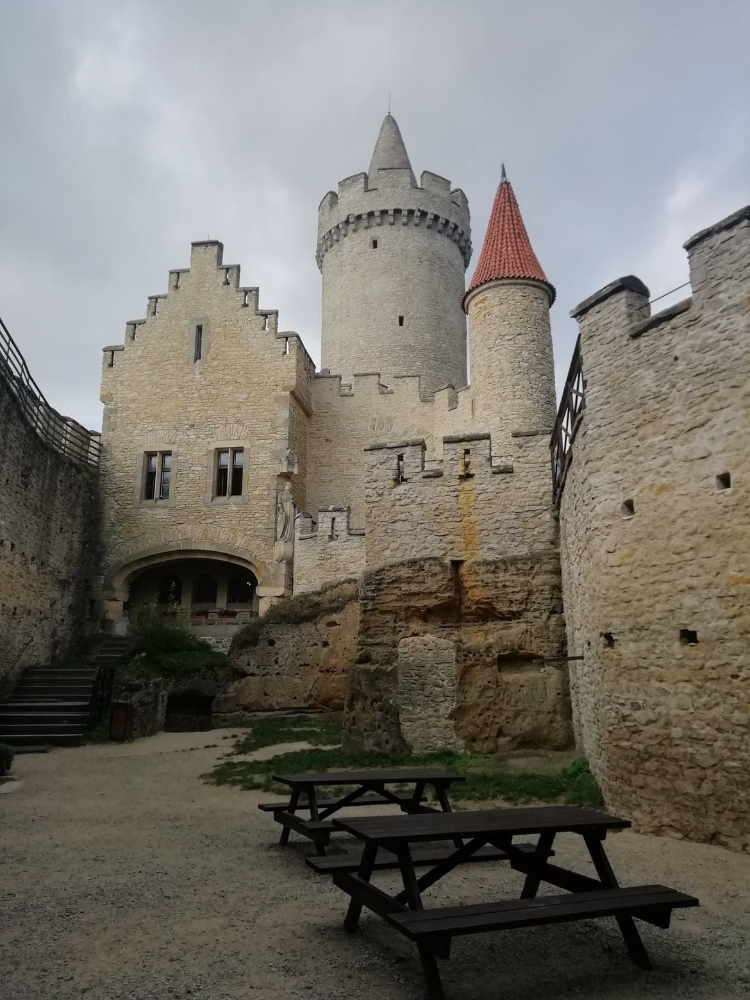
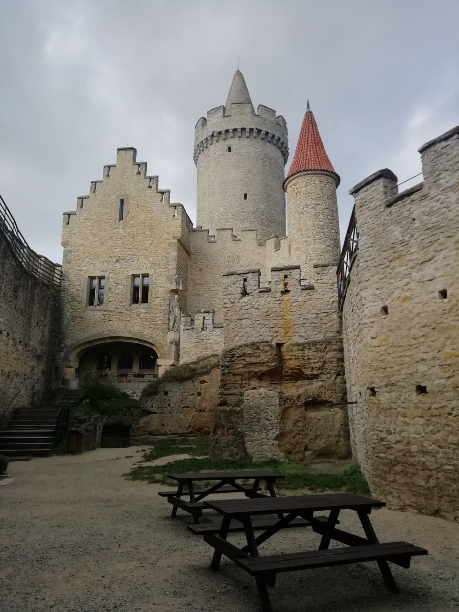
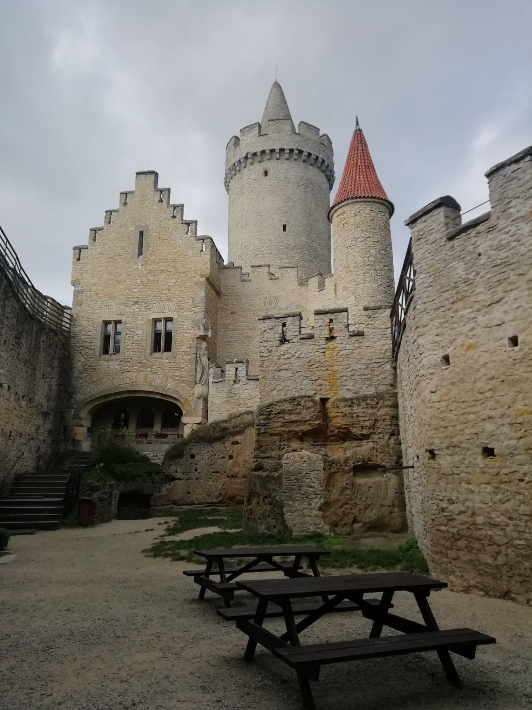

Chráněná krajinná oblast Kokořínsko se nachází mezi Mělníkem a Českou Lípou a rozkládá se na území tří krajů. Největší podíl na celkové rozloze zaujímají Liberecký a Středočeský kraj. Zbylá a nejmenší část spadá do Ústeckého kraje.
